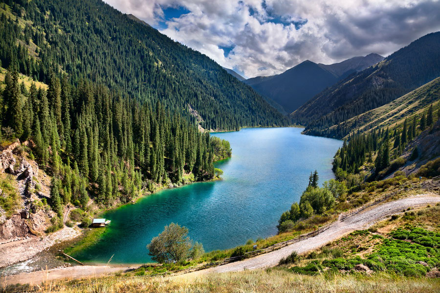
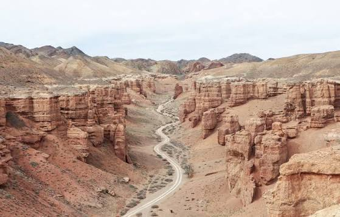
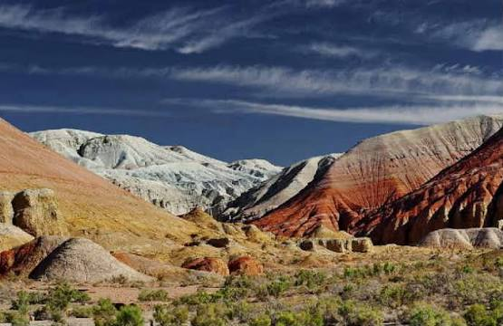
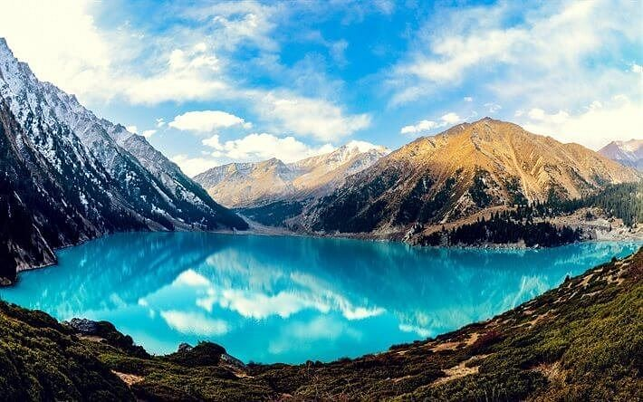
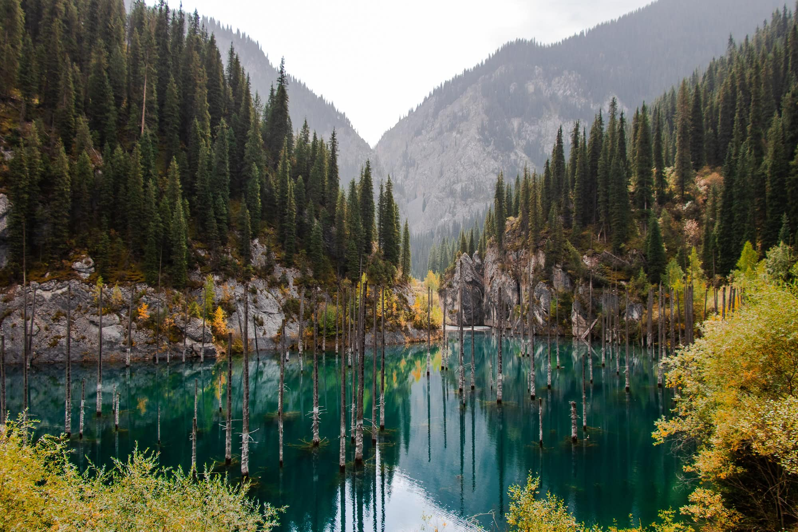
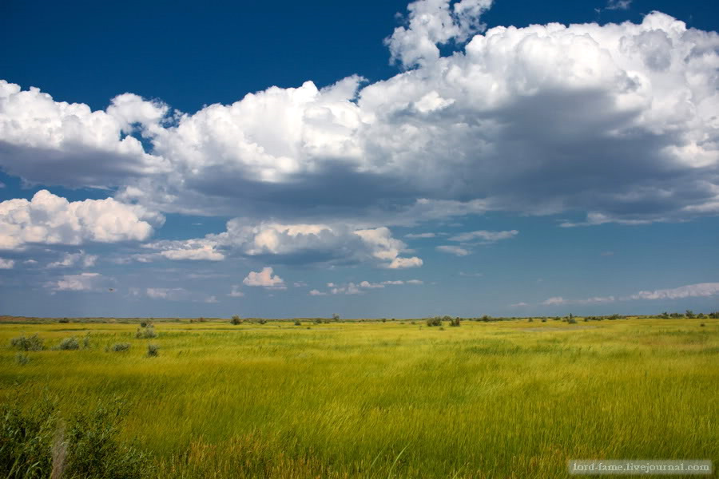
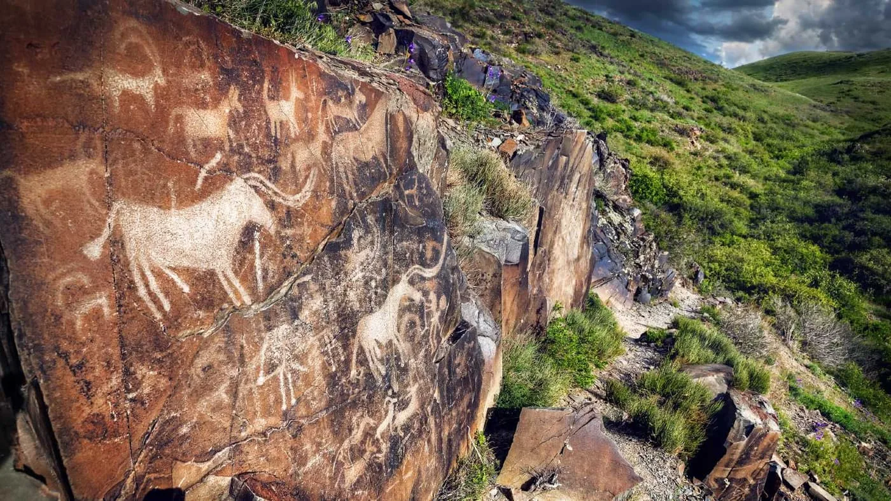
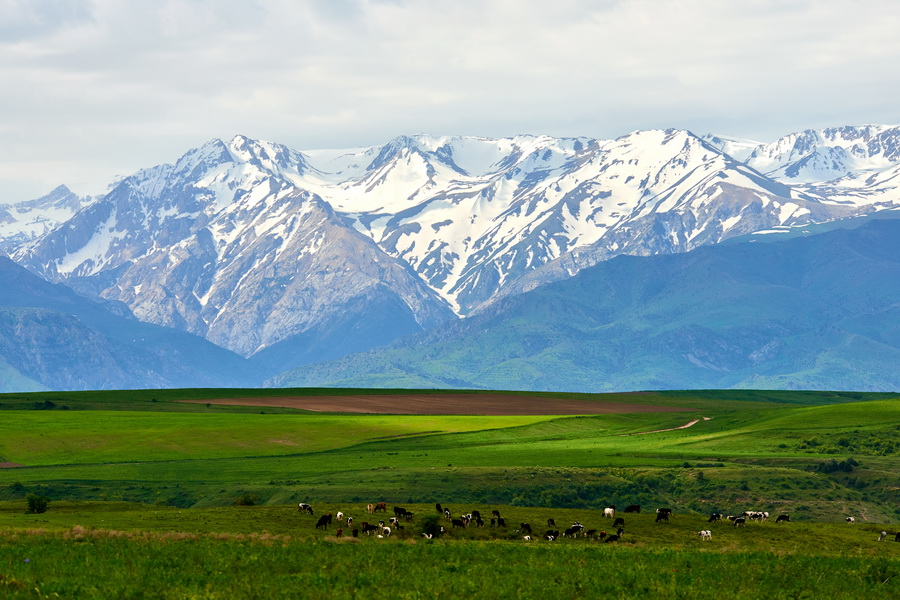

National Parks of Kazakhstan
Kazakhstan has many beautiful national parks. They protect animals, plants and natural landscapes.

National Parks & Nature Reserves
Explore protected natural areas of Kazakhstan. Park locations and names are loaded from OpenStreetMap via Overpass API.
Loading parks...
Natural Areas
Mountains
Mountain areas provide habitats for many plants and animals.
Deserts
Desert landscapes are home to specially adapted animals and plants.
Steppes
The steppe is one of the main natural regions of Kazakhstan.
Nature at a Glance
Some numbers that show why protecting nature matters.
National parks
Images in the gallery
Featured parks
The counters show the number of parks and items featured on this page.
National Parks Gallery
Some beautiful places and landscapes of Kazakhstan.

Charyn Canyon

Altyn-Emel
Kazakhstan Nature

Burabay

Ile-Alatau

Kaindy Lake

Kazakhstan Steppe

Tamgaly

Aksu-Zhabagly
Share Our Nature Message
Protecting national parks means protecting wildlife, plants and the natural beauty of Kazakhstan.
Why Protect National Parks?
- National parks protect natural habitats.
- They help protect endangered animals.
- They preserve beautiful landscapes.
- They are important for education and tourism.
Interactive Nature Page
Current Date and Time
Explore National Parks
Click the button to discover more about protecting national parks.
National parks protect rare species and beautiful landscapes. Visitors should stay on marked trails and never leave rubbish behind.
Interactive Park Gallery
Choose a park to change the large picture.
Selected: Charyn Canyon
Rate the Parks Page
No rating selected.